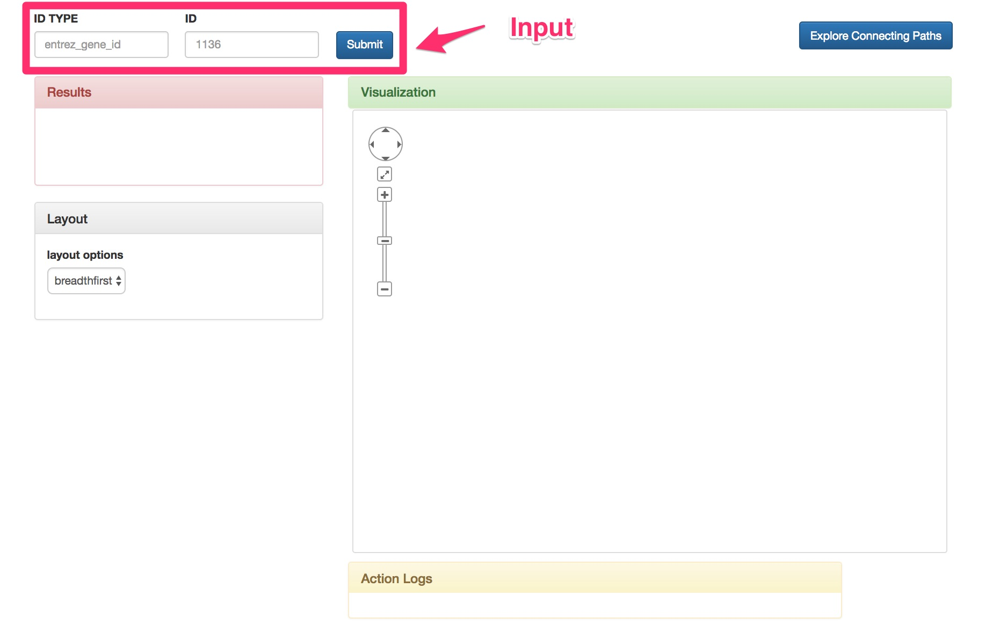
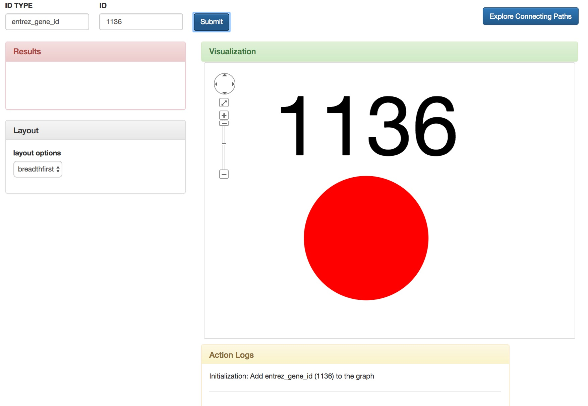
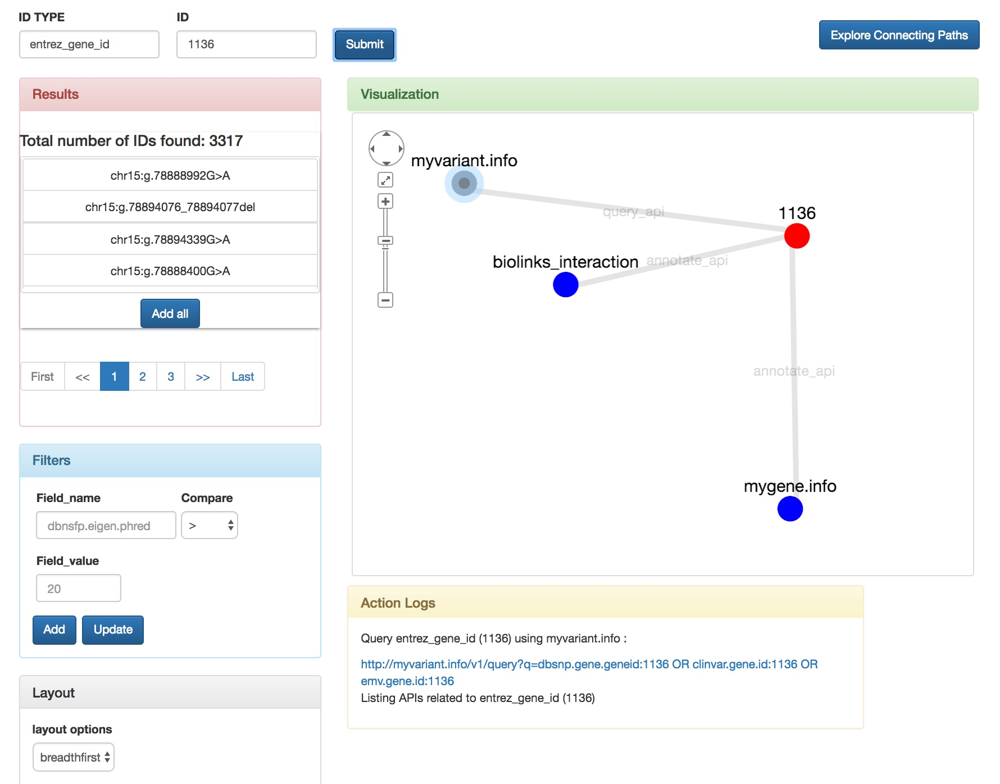
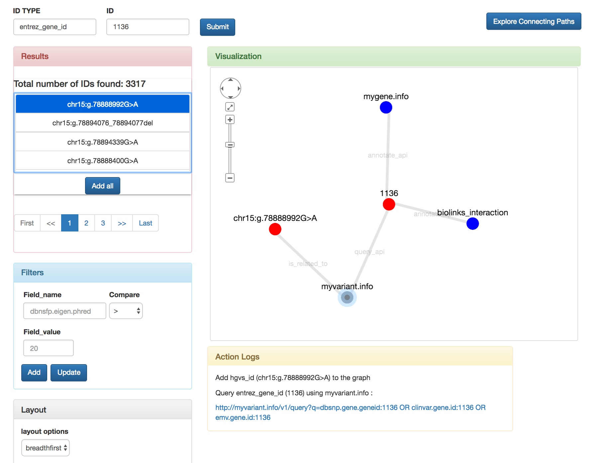
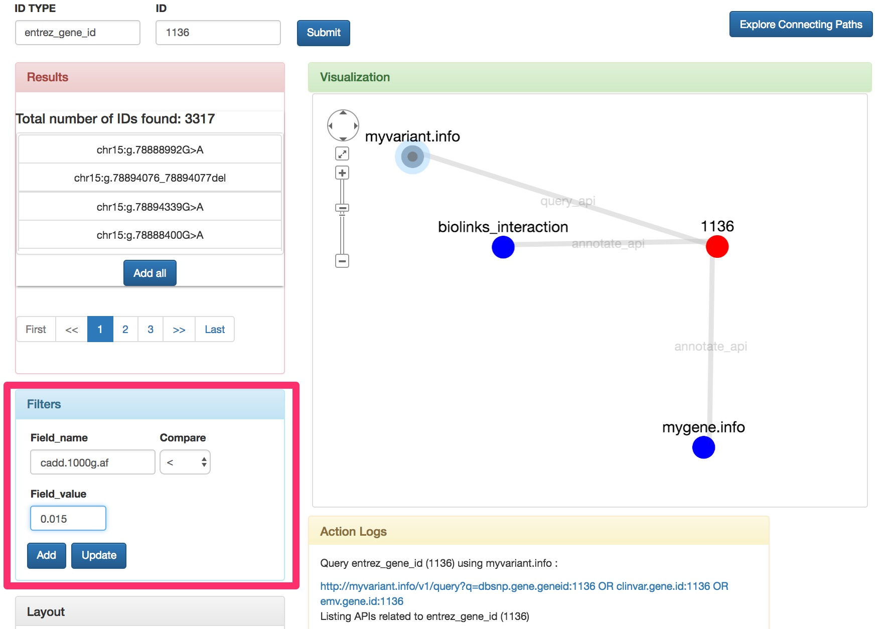
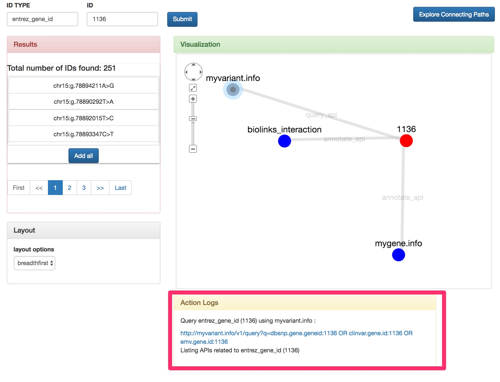

Tour
Step 1: Specify Input 
First, start by specifying the ID TYPE and ID.
Currently accepted ID TYPEs in BioThings Explorer includes entrez_gene_id, ensembl_gene_id, wikipathways_ids, etc. For a complete list of ID types accepted and examples of IDs, please refer to ID TYPE section.
For demonstration, we will use 'entrez_gene_id' 1136 as a start point.
After filling 'ID TYPE' and 'ID' field, click 'Submit', and a node for the ID you specified will display on the 'Visualization' section.
Step 2: Click on Biological Entity node to find linked APIs 
Here, a red node is been displayed in the 'Visualization' box representing 'entrez_gene_id' 1136.
Now, click on the red node, it will display all avialable API resources which accepts 'entrez_gene_id' as an input. Currently, we have 3 APIs in BioThings Explorers which could be linked from 'entrez_gene_id', e.g. MyGene.info, MyVariant.info and BioLink.
For a complete list of API resources included in BioThings Explorer, please check the API Resource section.
Step 3: Click on API node to find linked Biological Entities
 Here, we click on the node for myvariant.info, which is an API for variant annotation information.
The system automatically make API calls to MyVariant.info and returns all hgvs_ids in MyVariant.info which are related to 'entrez_gene_id' 1136 , which is the initial input.
The results are listed in the left 'Results' box. You can browse all results using the pagination bar below.
Step 3: Click interested result to add to graph
Here, we click on the one of the result returned from MyVariant.info, which is 'chr15:g.78888992G>A'. It is then added to the 'Visualization' box. And you can click on that 'chr15:g.78888992G>A' node to explore further about all APIs and biogical entities which could be linked from this variant.
Step 4: Filter
In case you want to filter the results returned, you could use the 'Filters' box on the left column. Here we filter for all variants which has allele frequency recorded lower than 0.15 in 1000 Genome Project. You can add multiple filters by clicking on the 'Add' button in the 'Filter' box. When finished, click 'Update' button in the 'Filter' box to update your search results.
Step 5: Check log file
There is box called 'Action Logs' on the right column, which records all actions which you have performed on BioThings Explorer. From there, you could get all API call information for further analysis.